User Manual — v1.0
Chaltu's Salon
Admin Dashboard
A complete guide to managing bookings, stylists, services, gallery, analytics, and users from the admin panel.
Websitechaltusalon.com
Admin URLchaltusalon.com/admin
VersionMay 2026
Section 1
Logging In
The admin dashboard is a secure, password-protected area. Only authorised staff with a valid username and password can access it.
How to Access
Open your browser and go to: chaltusalon.com/admin

Fig 1.1 — The login screen with the salon photo background and secure sign-in card.
Sign In Steps
- Enter your Username in the first field.
- Enter your Password in the second field.
- Click the Sign In button.
- You will be taken directly to the Dashboard on success.
Stay Logged In
Your session is saved in the browser for 24 hours. If you close the tab and come back within that time, you will be logged in automatically without needing to enter your password again.
Login Errors
| Error Message | What It Means & How to Fix It |
|---|
| "Invalid username or password" |
The username or password is incorrect. Check for typos and try again. Passwords are case-sensitive. |
| Nothing happens when clicking Sign In |
Both fields are required. Make sure neither field is empty. |
| Page keeps loading / no response |
Check your internet connection. If the issue persists, refresh the page and try again. |
Logging Out
Click Log Out at the bottom of the left sidebar at any time. You will be returned to the login screen immediately.
Security Tip
Always log out when using a shared or public computer. Your session token is stored in the browser and will remain active for 24 hours unless you explicitly log out.
Section 2
Dashboard Overview
The Dashboard is the first screen you see after logging in. It gives you a real-time overview of your salon's performance, today's appointments, and recent bookings.
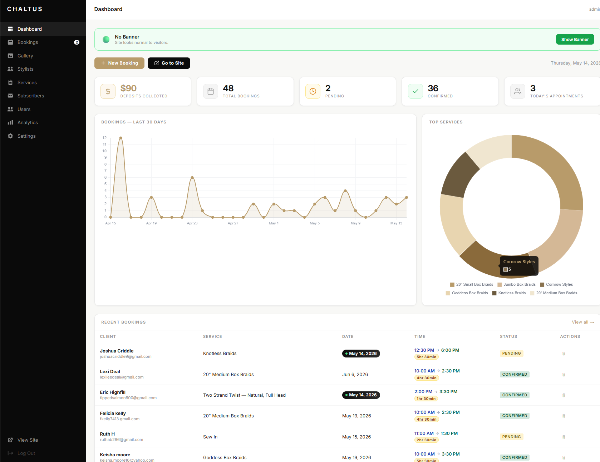
Fig 2.1 — The main dashboard showing stats, charts, and recent bookings.
Navigation Sidebar
The black sidebar on the left is your main navigation. Click any item to switch sections:
| Menu Item | What It Does |
|---|
| Dashboard | Returns to the main overview screen. |
| Bookings | Manage all client appointments. The number badge shows pending bookings that need attention. |
| Gallery | Upload and manage the photo gallery shown on the website. |
| Stylists | Add, edit, or hide stylists shown on the website and in bookings. |
| Services | Manage the full service menu with pricing and durations. |
| Subscribers | View email subscribers who signed up from the website. |
| Users | Manage admin login accounts. Superadmin only. |
| Analytics | View website traffic, top pages, referrers, and login history. |
| Settings | Change your account password. |
| View Site | Opens the public website in a new tab. |
| Log Out | Ends your session and returns to the login screen. |
Stat Cards
Five summary cards are displayed at the top of the dashboard:
| Card | What It Shows |
|---|
| Deposits Collected | Total dollar value of deposits marked as paid across all bookings. |
| Total Bookings | All-time total number of bookings in the system. |
| Pending | Bookings that have been submitted but not yet confirmed. |
| Confirmed | Bookings that have been confirmed with the client. |
| Today's Appointments | Number of bookings scheduled for today's date. |
Charts
Bookings — Last 30 Days
A line chart showing how many bookings were received each day over the past 30 days. Hover over any point to see the exact count for that date. Useful for spotting busy periods and slow weeks.
Top Services
A doughnut chart showing which services are booked most often. Hover over any segment to see the service name and count. Use this to understand what your clients want most.
Quick Actions
| Button | What It Does |
|---|
| + New Booking | Opens the manual booking form to add an appointment directly (walk-in or phone booking). |
| Go to Site | Opens the public website in a new browser tab. |
Maintenance Banner
The banner at the top of the dashboard controls a site-wide notice shown to website visitors.
| State | What Visitors See |
|---|
| 🟢 No Banner (default) | The website looks completely normal to visitors. |
| 🟡 Banner Showing | A yellow announcement banner appears at the top of the website saying the site is being updated. |
Click Show Banner or Hide Banner to toggle it on and off instantly.
Recent Bookings
A preview table at the bottom of the dashboard shows the most recent bookings. Click View all → to go to the full Bookings section. Today's bookings are highlighted with a dark date pill.
Section 3
Bookings — List View
The Bookings section is where you manage all client appointments. Click Bookings in the sidebar to open it. The default view is the List.
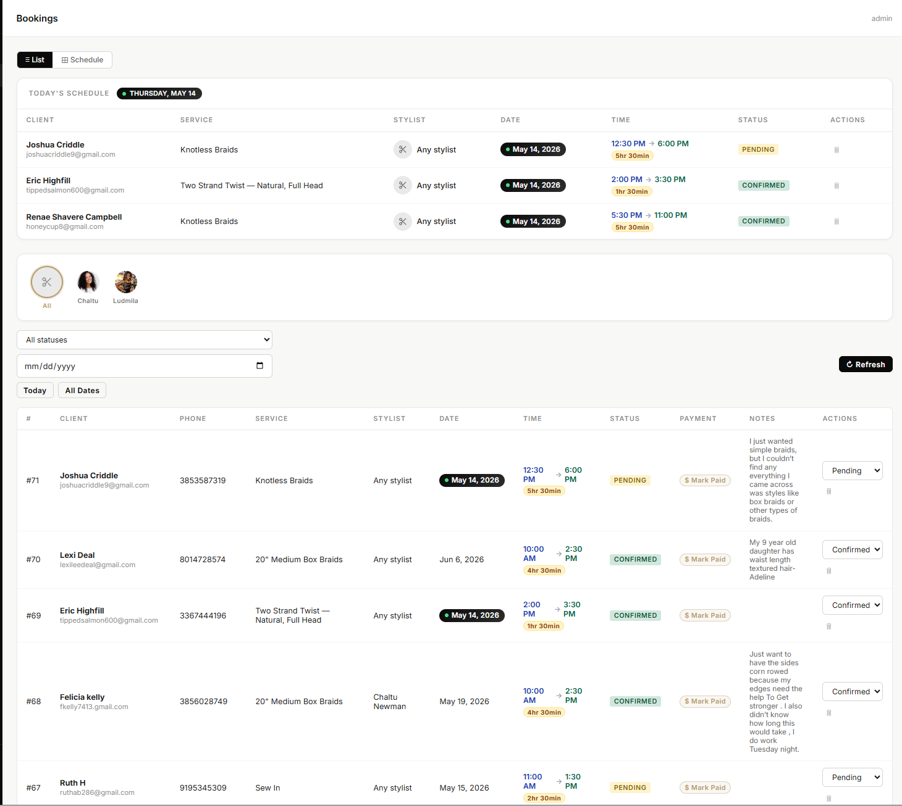
Fig 3.1 — Bookings list showing Today's Schedule at the top, stylist filter, and the full booking table.
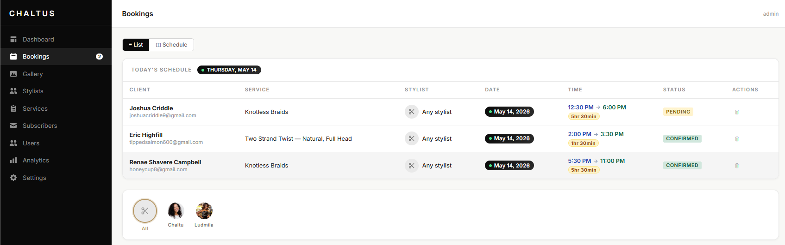
Fig 3.2 — Today's Schedule card and stylist filter bar at the top of the Bookings page.
Today's Schedule Card
At the very top of the Bookings page is a compact card showing only today's appointments, sorted by appointment time. This gives you a quick view of who is coming in today without any filtering needed.
Each row shows: Client name & email, Service, Stylist (with photo), Date (highlighted), Time (with end time and duration), Status, and a delete button.
Today's Date Highlight
Any booking with today's date shows a dark pill badge (e.g. "● May 14, 2026") in the Date column to make it easy to spot at a glance.
Stylist Filter Bar
Below Today's Schedule is a row of circular stylist photos. Click any stylist to filter the booking list to show only their appointments. Click All (scissors icon) to show all stylists again.
Filters
| Filter | How to Use |
|---|
| All statuses | Dropdown to filter by Pending, Confirmed, Completed, or Cancelled. Select "All statuses" to show everything. |
| Date picker | Click the date field to pick a specific date and show only bookings for that day. |
| Today button | Shortcut to instantly filter to today's date. |
| All Dates button | Clears the date filter and shows all bookings. |
| ↻ Refresh | Reloads the booking list from the server to show the latest data. |
Booking Table Columns
| Column | Description |
|---|
| # | Booking number (ID). Higher numbers are newer bookings. Bookings are listed newest first by default. |
| Client | Client's full name and email address. |
| Phone | Client's phone number. Click to call on mobile devices. |
| Service | The service the client booked. |
| Stylist | The assigned stylist, or "Any stylist" if no preference was given. |
| Date | Appointment date. Today's date appears as a highlighted dark pill. |
| Time | Start time → End time with a duration pill (e.g. 5hr 30min). |
| Status | Current booking status: Pending, Confirmed, Completed, or Cancelled. |
| Payment | Shows "$ Mark Paid" or "✓ $30 Paid". Click to toggle payment status. |
| Notes | Any notes the client included when booking. |
| Actions | Status dropdown to quickly update status, and a 🗑 delete button. |
Booking Status Meanings
| Status | Meaning |
|---|
| PENDING | New booking received. Client is waiting for confirmation. Action needed. |
| CONFIRMED | You have confirmed the appointment with the client. |
| COMPLETED | The appointment was completed successfully. |
| CANCELLED | The appointment was cancelled by the client or salon. |
Changing a Booking Status
There are two ways to update a booking's status:
- Quick update: Use the dropdown in the Actions column of the booking row. The change saves immediately.
- Via detail modal: Click anywhere on the booking row to open the full detail view, then use the status dropdown at the bottom.
Marking Payment
Click the $ Mark Paid button in the Payment column to record that the deposit has been collected in person. The button turns green and shows the amount. Click again to toggle it back to unpaid.
Deleting a Booking
Click the 🗑 icon in the Actions column. A confirmation prompt will appear asking you to confirm. Click Yes, delete to permanently remove the booking, or Cancel to go back.
Warning — Permanent Action
Deleted bookings cannot be recovered. Only delete a booking if you are certain it is no longer needed.
Pagination
Bookings are shown 25 per page. If there are more than 25, navigation arrows and a page counter appear below the table (e.g. "1–25 of 48"). Use ← Prev and Next → to move between pages.
Section 4
Bookings — Schedule View
The Schedule view shows bookings in a visual calendar format. Click the ⊞ Schedule button at the top of the Bookings page to switch to this view.
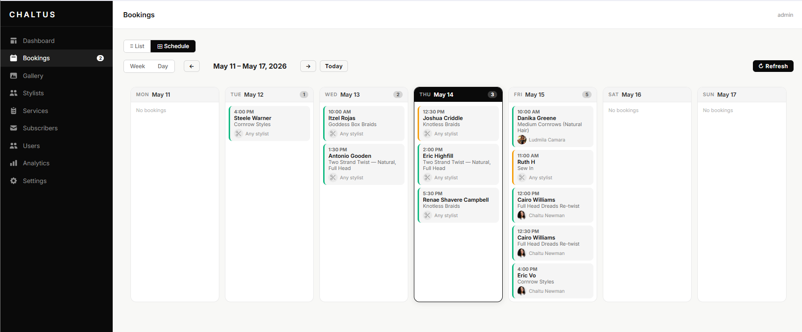
Fig 4.1 — Week schedule view showing Mon–Sun with booking cards per day. Today's column has a dark header.
Week View
The default view shows the full current week (Monday through Sunday). Each day appears as a card with all bookings for that day listed in time order. Today's column has a black header to stand out from other days.
What Each Booking Card Shows
| Field | Description |
|---|
| Time | Appointment start time in bold at the top of the card. |
| Client Name | The client's full name. |
| Service | The booked service. |
| Stylist | Stylist photo (or scissors icon) and name at the bottom of the card. |
The coloured left border on each card indicates the booking status:
- Amber border — Pending
- Green border — Confirmed
- Blue border — Completed
- Red border — Cancelled
Schedule Toolbar
| Button | What It Does |
|---|
| Week / Day toggle | Switch between the 7-day week view and a single-day grid view showing all stylists as columns. |
| ← (Previous) | Go back one week (or one day in Day view). |
| Date label | Shows the current date range being displayed, e.g. "May 11 – May 17, 2026". |
| → (Next) | Go forward one week (or one day in Day view). |
| Today | Jump back to the current week (or today in Day view). |
| ↻ Refresh | Reload the schedule from the server to pick up new bookings. |
Day View
Click the Day button to switch to the day view. This shows a time-slot grid with all stylists as columns, making it easy to see who is busy at each time slot. Click any filled cell to open the booking detail.
Clicking a Booking
Click any booking card in the week view (or any filled cell in the day view) to open the full booking detail modal where you can update the status, record payment, or reschedule.
Section 5
Booking Detail & Actions
Click any row in the booking list (or any card in the schedule) to open the full booking detail modal.
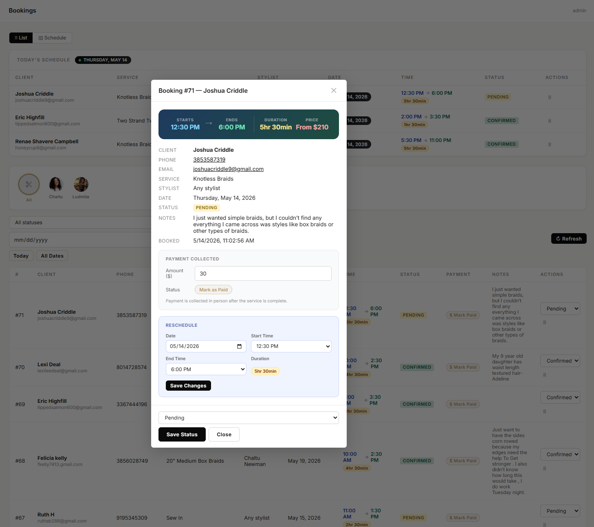
Fig 5.1 — Booking #71 detail modal showing appointment timing, client info, payment section, and reschedule tool.
Appointment Timing Card
At the top of the modal is a dark card showing four key pieces of information at a glance:
| Field | Description |
|---|
| Starts | The appointment start time. |
| Ends | Calculated end time based on service duration. |
| Duration | Total appointment length (e.g. 5hr 30min). |
| Price | Service price (e.g. From $210). |
Client Information
Below the timing card is a full detail grid showing: Client name, Phone (clickable to call), Email (clickable to email), Service, Stylist, Date, Status, Notes, and when the booking was submitted.
Payment Collection
The Payment Collected section lets you record when a client pays in person:
- Enter the amount in the Amount ($) field (default is 30).
- Click Mark as Paid.
- The button turns green and shows "✓ Paid $[amount]".
- Click again to reverse the payment if needed.
Note
Payment is recorded manually after the service is complete in person. This is for tracking deposit/full-payment collection only — it does not process any card payments.
Reschedule
To move a booking to a new date or time:
- In the Reschedule section, click the Date field and select the new date.
- Use the Start Time dropdown to pick the new start time.
- Use the End Time dropdown — the Duration badge updates automatically.
- Click Save Changes.
Reschedule Errors
| Error | Fix |
|---|
| "Please select a date." | The date field is empty. Click the date input and choose a date. |
| "End time must be after start time." | The end time is set to the same or earlier than the start time. Adjust the End Time dropdown. |
Updating Status from the Modal
- Use the status dropdown at the bottom of the modal to select the new status.
- Click Save Status.
- The modal closes and the booking list refreshes automatically.
Section 6
Creating a Manual Booking
Use the manual booking form to add appointments for walk-in clients or phone calls — any booking that doesn't come through the website form.
Click the + New Booking button on the Dashboard to open the form.
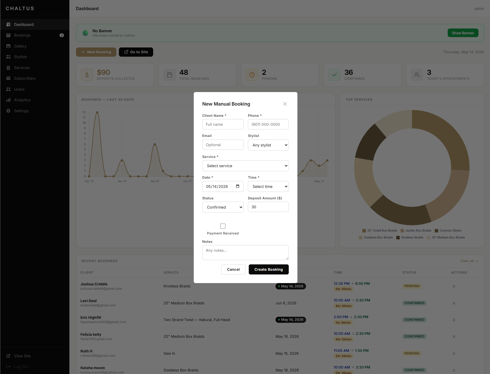
Fig 6.1 — The New Manual Booking form with all required and optional fields.
Form Fields
| Field | Required | Notes |
|---|
| Client Name | Required | Client's full name. |
| Phone | Required | Client's phone number for contact. |
| Email | Optional | Client's email address. Leave blank if not provided. |
| Stylist | Optional | Choose a specific stylist or leave as "Any stylist". |
| Service | Required | Select from the full service menu dropdown. |
| Date | Required | Defaults to today. Click to pick a different date. |
| Time | Required | Select the appointment start time from the dropdown. |
| Status | Optional | Defaults to Confirmed. Change to Pending if still tentative. |
| Deposit Amount ($) | Optional | Defaults to $30. Change to the actual deposit amount. |
| Payment Received | Optional | Check this box if payment has already been collected. |
| Notes | Optional | Any internal notes about the appointment. |
How to Create a Booking
- Fill in all required fields (marked with *).
- Select the service from the dropdown — this automatically sets the duration.
- Set the date and time.
- Optionally check Payment Received if deposit was collected on the spot.
- Click Create Booking.
- The modal closes and the booking appears immediately in the list and Today's Schedule (if it is today).
Tip — Walk-ins
For walk-in clients, set the Status to Confirmed and check Payment Received if they paid a deposit immediately.
Section 7
Managing Stylists
The Stylists section lets you add, edit, and control which stylists appear on the public website and in the booking form.
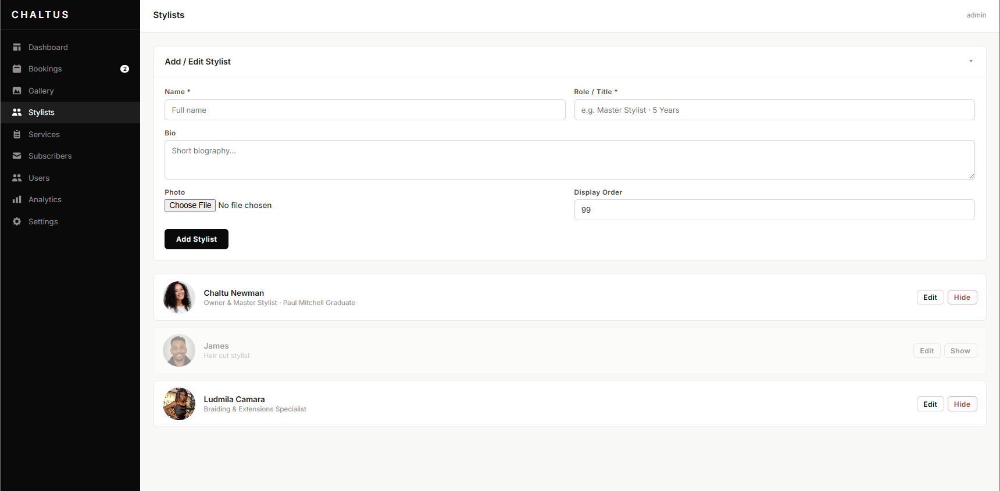
Fig 7.1 — Stylists page showing the Add/Edit form and the current stylist list.
Adding a New Stylist
- Fill in the Name field with the stylist's full name.
- Fill in the Role / Title field (e.g. "Master Stylist · 5 Years").
- Optionally write a short Bio for the About section on the website.
- Click Choose File under Photo to upload a profile photo. Accepted formats: JPG, PNG, WEBP.
- Set the Display Order — lower numbers appear first on the website. Default is 99.
- Click Add Stylist.
Editing a Stylist
- Find the stylist in the list below the form.
- Click the Edit button on the right side of their card.
- The form above will fill in with their current details.
- Make your changes and click Save Changes.
- Click Cancel Edit if you want to discard your changes.
Showing / Hiding a Stylist
Each stylist card has a Hide or Show button:
| Button | Effect |
|---|
| Hide (red) | Removes the stylist from the public website and the booking form dropdown. Their past bookings remain in the system. |
| Show (outline) | Makes a previously hidden stylist visible again on the website and booking form. |
Hidden stylists appear greyed out in the admin list so you can tell them apart at a glance.
Photos in Bookings
Once a stylist has a photo uploaded, it will appear in the Today's Schedule card, week schedule cards, and the stylist filter bar on the Bookings page.
Section 8
Managing Services
The Services section controls the full menu that appears on the public website and in the booking form. Services are grouped by category.
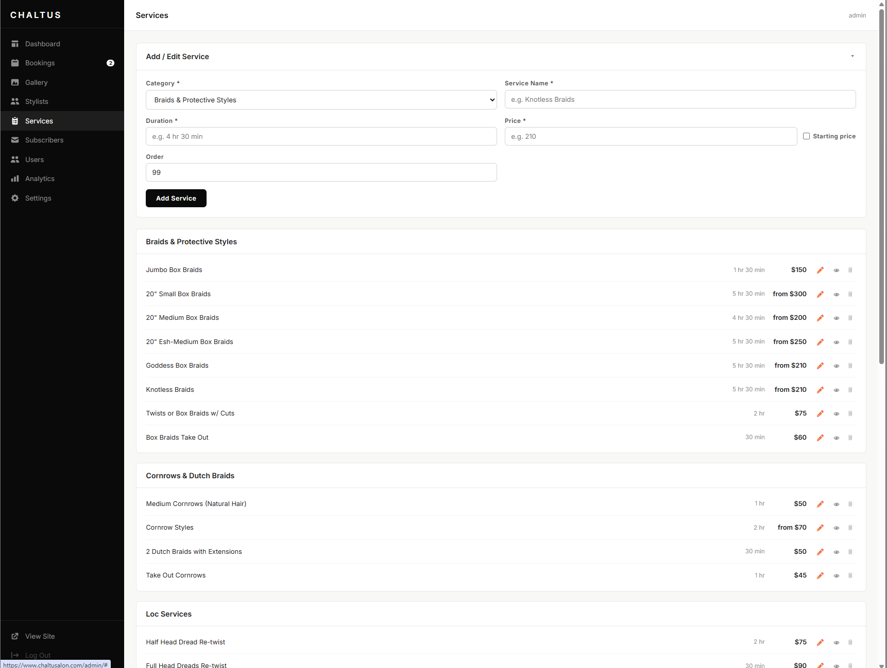
Fig 8.1 — Services page showing the Add/Edit form and services grouped by category with prices and durations.
Adding a New Service
- Select the Category from the dropdown (e.g. Braids & Protective Styles).
- Enter the Service Name (e.g. Knotless Braids).
- Enter the Duration as text (e.g. "4 hr 30 min" or "30 min").
- Enter the Price as a number (e.g. 210). Check Starting price if this is a "from" price.
- Set the Order number — lower numbers appear first within the category.
- Click Add Service.
Editing a Service
- Find the service in the list below. Click the ✏️ pencil icon on the right.
- The form above fills in with the current details.
- Make your edits and click Save Changes.
Service Actions
| Icon | Action |
|---|
| ✏️ Edit | Loads the service into the form above for editing. |
| 👁 / 🚫 Toggle | Show or hide the service from the public website. Hidden services cannot be booked by clients online. |
| 🗑 Delete | Permanently removes the service. A confirmation prompt appears first. |
Service Categories
The current categories available are:
- Braids & Protective Styles
- Cornrows & Dutch Braids
- Loc Services
- Sew-in & Crochet
- Natural Hair & Twists
- Wash & Style
- Treatments & Beauty
Duration & Booking System
The duration you enter for a service (e.g. "4 hr 30 min") is also used to calculate the end time shown in bookings. Enter it in a consistent format so the system can parse it correctly.
Section 9
Gallery
The Gallery section controls the photos displayed in the public gallery on the website. Upload work photos, before/after shots, or any images you want clients to see.
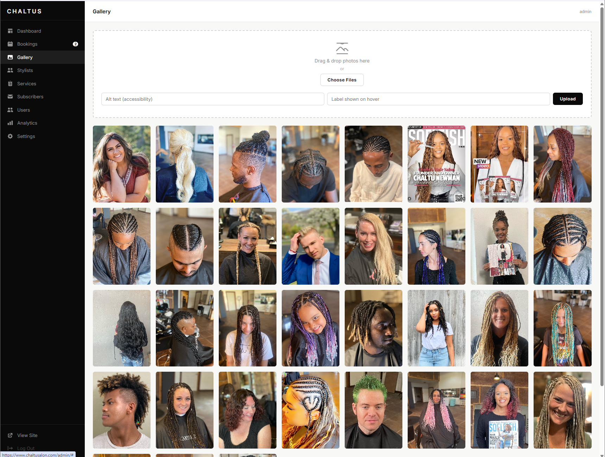
Fig 9.1 — Gallery page showing the upload zone and the current photo grid.
Uploading Photos
There are two ways to add photos:
Method 1 — Drag & Drop
- Drag image files from your computer and drop them onto the dashed upload zone.
- You can drop multiple files at once.
Method 2 — Choose Files
- Click the Choose Files button inside the upload zone.
- Select one or more image files from your computer.
After Selecting Files
- Optionally fill in Alt text — a description for accessibility (e.g. "Box braids on a client").
- Optionally fill in a Label — this text appears when a visitor hovers over the photo on the website.
- Click the Upload button.
- A success message confirms the upload. The photos appear in the grid below.
Deleting a Photo
- Hover over any photo in the grid to reveal the overlay.
- Click the Delete button that appears.
- Confirm the deletion in the prompt.
Accepted File Types
Upload JPG, PNG, WEBP, or GIF image files only. Very large files may take longer to upload depending on your internet connection.
Best Practice
Resize photos to under 2MB before uploading for faster loading on the website. Use the label field to name the hairstyle so clients can identify what they're looking at.
Section 10
Subscribers
The Subscribers section shows all email addresses collected from people who signed up through the website's newsletter or contact form.
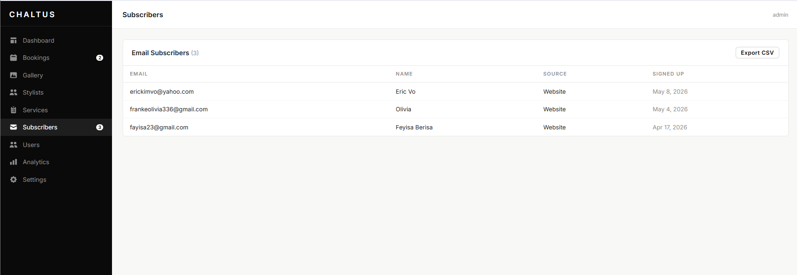
Fig 10.1 — Subscribers list showing email, name, source, and sign-up date for each subscriber.
Subscriber Table Columns
| Column | Description |
|---|
| Email | The subscriber's email address. Click to open your email client pre-addressed to them. |
| Name | Their name, if provided when signing up. |
| Source | Where they signed up — usually "Website". |
| Signed Up | The date they subscribed. |
Exporting Subscribers
- Click the Export CSV button in the top right of the section.
- A CSV file will download to your computer with all subscriber data.
- Open the file in Excel or Google Sheets to use it for email marketing.
Using Subscriber Data
Export your subscriber list and import it into an email marketing tool (such as Mailchimp or Gmail Groups) to send promotional emails, appointment reminders, or announcements to all your subscribers at once.
Section 11
Analytics
The Analytics section shows you how people are finding and using your website, giving you insight into your online presence.
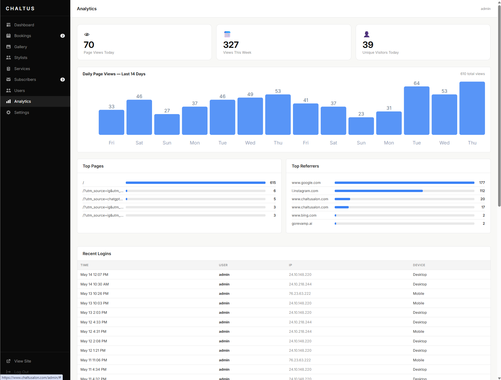
Fig 11.1 — Analytics dashboard showing page views, daily chart, top pages, referrers, and recent logins.
Summary Stats
| Stat | Description |
|---|
| Page Views Today | Total number of times any page on your site was loaded today. |
| Views This Week | Total page views for the current week. |
| Unique Visitors Today | Number of distinct individuals who visited the site today (based on browser fingerprint). |
Daily Page Views Chart
A bar chart showing traffic for each of the last 14 days. The total across all 14 days is shown in the top right (e.g. "610 total views"). Use this to spot your busiest days and track growth over time.
Top Pages
Shows which pages on your website receive the most visits. The home page (/) is almost always number one. This helps you understand what content clients look at most.
Top Referrers
Shows where your visitors are coming from. Common referrers include:
- www.google.com — visitors who found you via Google Search
- l.instagram.com — visitors who clicked a link in your Instagram posts or bio
- Direct — visitors who typed your URL directly or used a bookmark
Insight
If Instagram is sending a lot of traffic, that tells you your social media is working. If Google is high, your SEO is good. Focus on the channels bringing in the most visitors.
Recent Logins
A security log showing the last admin logins — who logged in, when, from which IP address, and on what type of device (Desktop or Mobile). Use this to check for any unauthorised access to your admin panel.
Unfamiliar Login?
If you see a login time or IP address you don't recognise, change your password immediately via the Settings page and contact your developer.
Section 12
Settings
The Settings page currently contains one function: changing your account password.
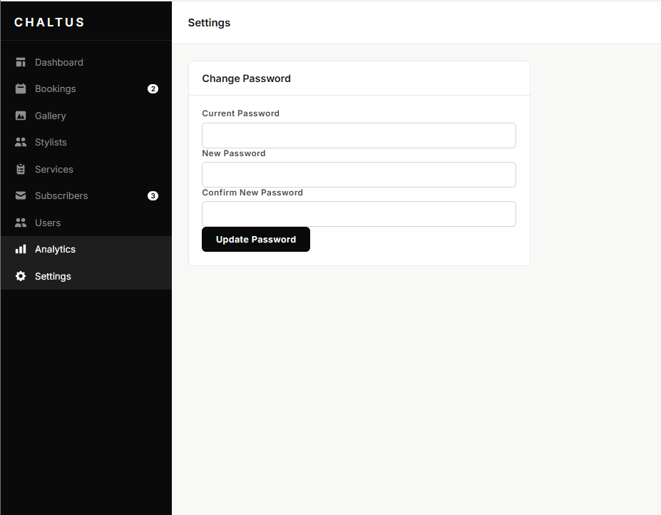
Fig 12.1 — Settings page with the Change Password form.
Changing Your Password
- Enter your Current Password to verify your identity.
- Enter the New Password — must be at least 8 characters.
- Re-enter the new password in Confirm New Password — must match exactly.
- Click Update Password.
- A green success message appears: "✓ Password updated successfully."
Which account does this update?
This changes the password for whichever account is currently logged in — including the superadmin account. If you are logged in as "admin", this updates the admin password.
Password Change Errors
| Error | Fix |
|---|
| "Passwords do not match." | The New Password and Confirm New Password fields are different. Re-type both carefully. |
| "Password must be at least 8 characters." | Your new password is too short. Choose a longer password. |
| "Current password is incorrect." | The current password you entered is wrong. Double-check and try again. |
Important
After changing the password, you will stay logged in on your current device. The next time you need to log in, use the new password. There is no password recovery by email — if you forget it, the superadmin must reset it for you from the Users page.
Section 13
Users & Access
The Users section is only visible to accounts with the Superadmin role. It lets you create and manage login accounts for staff members.
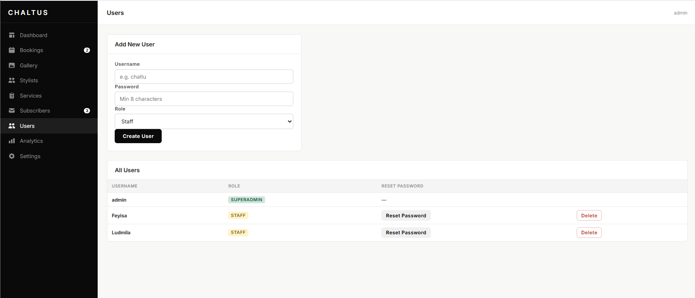
Fig 13.1 — Users page showing the Add New User form and the list of all accounts with their roles.
User Roles
| Role | What They Can Do |
|---|
| SUPERADMIN |
Full access to everything including the Users page. Can create, delete, and reset passwords for other users. Should only be assigned to the salon owner. |
| STAFF |
Access to Bookings, Gallery, Stylists, Services, Subscribers, Analytics, and Settings. Cannot access the Users page or create new accounts. |
Adding a New User
- Enter a Username for the new account (e.g. the staff member's first name).
- Enter a Password — must be at least 8 characters.
- Select a Role — choose Staff for most team members.
- Click Create User.
- A success message appears and the new user appears in the list below.
- Share the username and password with the staff member directly and in person.
First Login Note
After creating a new account, the staff member should log in and immediately change their password from the Settings page. Passwords created here are temporary and should not be shared over text or email.
Resetting a Password
- Find the user in the All Users list.
- Click Reset Password.
- A popup asks you to type a new password (min 8 characters).
- Enter the new password and click OK.
- Share the new password with the staff member.
Deleting a User
- Find the user in the list and click Delete.
- Confirm the deletion in the prompt.
Cannot Delete
The superadmin account ("admin") cannot be deleted. You also cannot delete the account you are currently logged in as.
User Management Errors
| Error | Fix |
|---|
| "Username already taken" | A user with that username already exists. Choose a different username. |
| "Password must be at least 8 characters" | Enter a longer password — at least 8 characters. |
| "Username and password required" | Both fields must be filled in before clicking Create User. |
Section 14
Common Errors & Quick Fixes
A reference guide for the most common issues you may encounter while using the admin dashboard.
Login Issues
| Problem | Solution |
|---|
| Can't log in — "Invalid username or password" | Check for typos. Passwords are case-sensitive. If you've forgotten the password, ask the superadmin to reset it from the Users page. |
| Logged out unexpectedly | Sessions last 24 hours. After 24 hours you will be logged out automatically. Simply log in again. |
| Dashboard loads but shows no data | Click the ↻ Refresh button or navigate away and back to the page. If it persists, log out and log back in. |
Booking Issues
| Problem | Solution |
|---|
| Booking list is empty | Check if a filter is active. Click All Dates and set the status to "All statuses" to clear all filters. |
| Schedule view shows nothing | Click the Today button to navigate to the current week. Click ↻ Refresh to reload. |
| Can't delete a booking — confirmation appears but row remains | Refresh the page. The deletion likely succeeded — the display sometimes needs a reload to update. |
| Payment toggle does nothing | Refresh the page and try again. If the issue persists, open the booking detail modal and use the payment section there instead. |
Stylist & Service Issues
| Problem | Solution |
|---|
| Stylist not showing in booking form | Go to the Stylists page and check if the stylist is hidden (greyed out with a "Show" button). Click Show to make them available again. |
| Service not showing on the website | Go to the Services page and look for the 🚫 icon next to the service. Click it to make the service visible again. |
| Photo not appearing after upload | Ensure the file is a JPG, PNG, or WEBP. Try a smaller file size. Hard refresh the browser (Ctrl+Shift+R) to clear the cache. |
Gallery Issues
| Problem | Solution |
|---|
| "Upload failed" | The file may be too large or an unsupported format. Resize the image and try again. Supported: JPG, PNG, WEBP, GIF. |
| Upload button stays greyed out | You must select files first (drag & drop or click Choose Files). The button activates only after files are selected. |
General Tips
Hard Refresh
If something looks wrong or outdated, do a hard refresh: Ctrl + Shift + R (Windows) or Cmd + Shift + R (Mac). This clears the browser cache and loads the latest version of the admin panel.
Mobile Access
The admin panel is accessible on mobile devices. Use your phone's browser and go to chaltusalon.com/admin. The sidebar collapses — tap the menu icon (☰) in the top left to open it.
Need Help?
For technical issues that cannot be resolved using this guide, contact your web developer with a description of the problem and a screenshot of any error message.
Chaltu's Salon — Admin Dashboard Manual
chaltusalon.com · Version 1.0 · May 2026
For technical support, contact your web developer.
chaltussalon@gmail.com